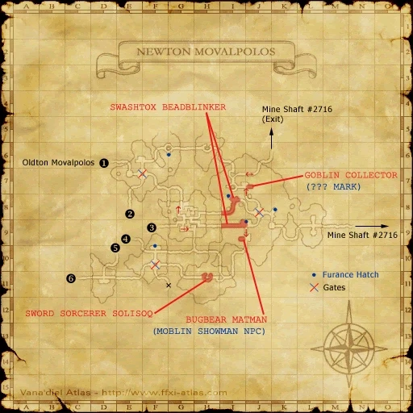

Level 75 reference · Zenith rules
|
Job: Monk Notorious Monster |
|
|
Zone |
Level |
Drops |
Steal |
Spawns |
Notes |
|
1 |
A, L | |||
|
HP = Detects Low HP; M = Detects Magic; Sc = Follows by Scent; T(S) = True-sight; T(H) = True-hearing JA = Detects job abilities; WS = Detects weaponskills; Z(D) = Asleep in Daytime; Z(N) = Asleep at Nighttime | |||||


Image source
Notes:
- Spawned by trading an Air Tank to the Moblin Showman NPC at I-9. The Moblin Showman will disappear when this NM spawns, and reappear 15 minutes after the NM is killed.
- For information on how to reach the Moblin Showman, see his page.
- Killable by: 6 characters level 70; Can be killed by 75THF/NIN and 75RDM/WHM duo or NIN75/WAR and RDM75/WHM duo.
- Special Attacks: Flying Hip Press used 2 to 3 times per fight (400-700HP AOE Wind damage)
- Baraera recommended to reduce damage of Flying Hip Press.
- Spawned by trading an Air Tank to the Moblin Showman NPC at I-9. The Moblin Showman will disappear when this NM spawns, and reappear 15 minutes after the NM is killed.
Adapted from Eden Wiki: Bugbear Matman · Contributors and history · CC BY-SA 4.0. Revision 2038. Layout, links and optional background text adapted for Zenith.